EDITORIAL · RESEARCH · INSTALLATION
Digital Daydream
Digital Daydream is a 10-page zine exploring how growing up around online spaces can shape escapism, identity, creativity, and communication. Inspired by the visual language of early 2000s teen magazines, the project combines research with playful layouts, quizzes, polls, and nostalgic digital imagery. The project was developed alongside a physical bedroom-inspired installation that brought the digital world into a physical space.
Designer & Researcher
InDesign · Photoshop
Research · Editorial · Installation
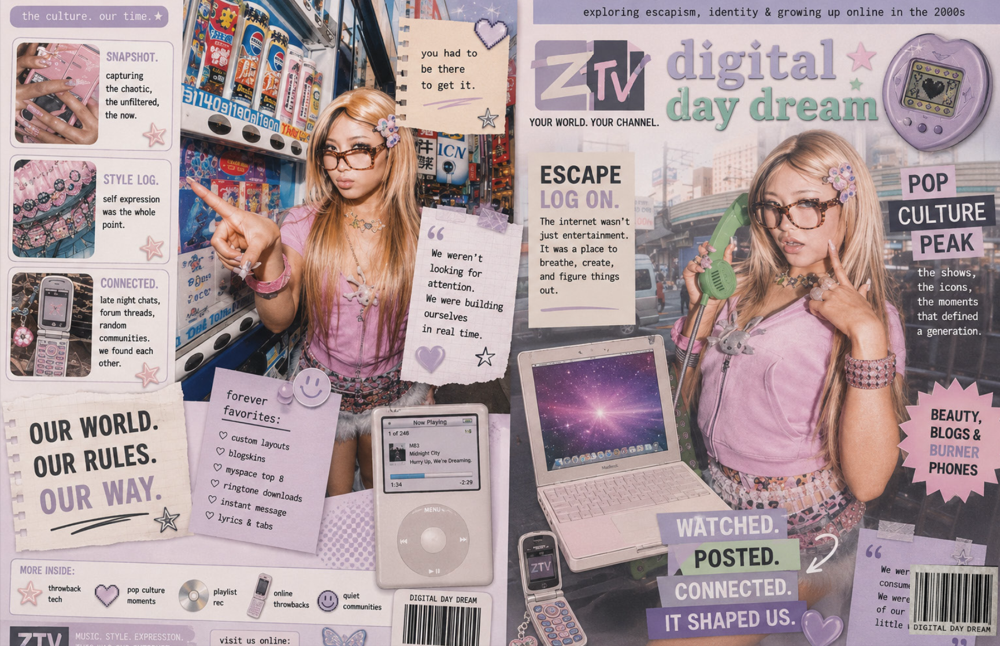
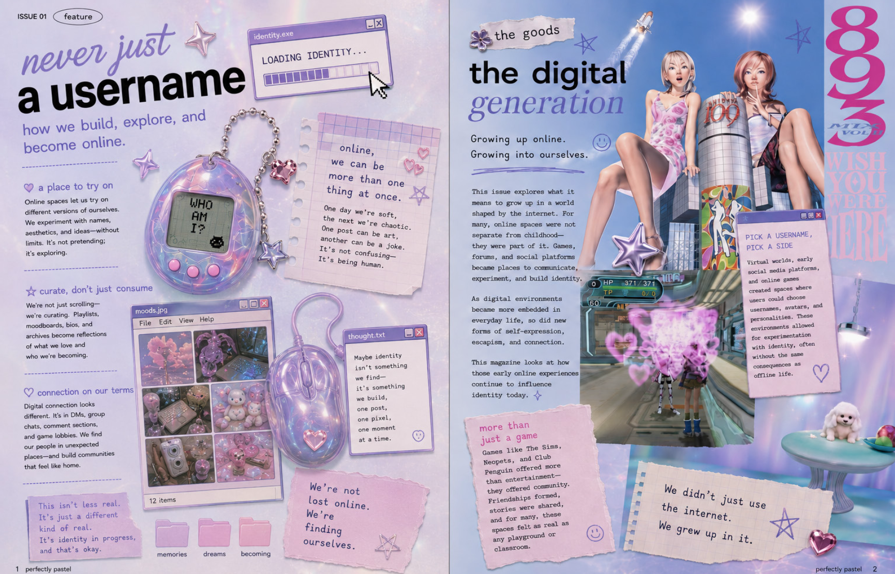
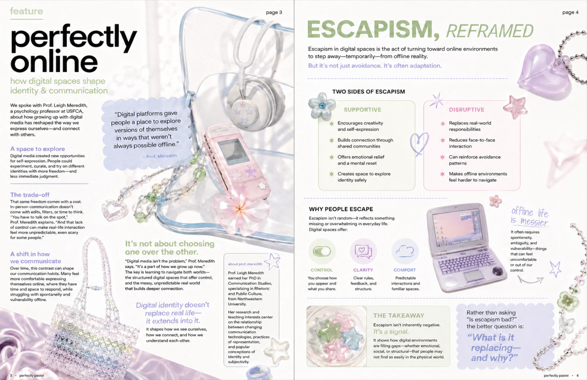
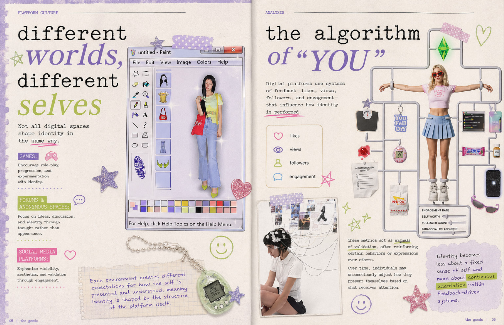
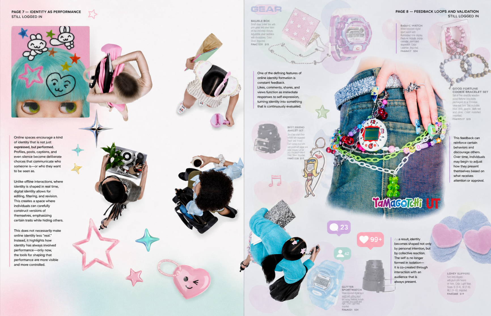
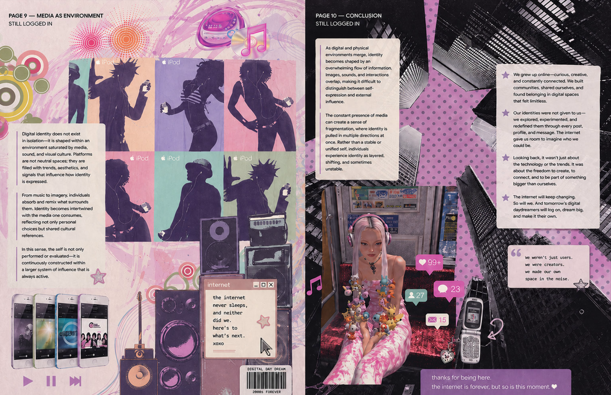
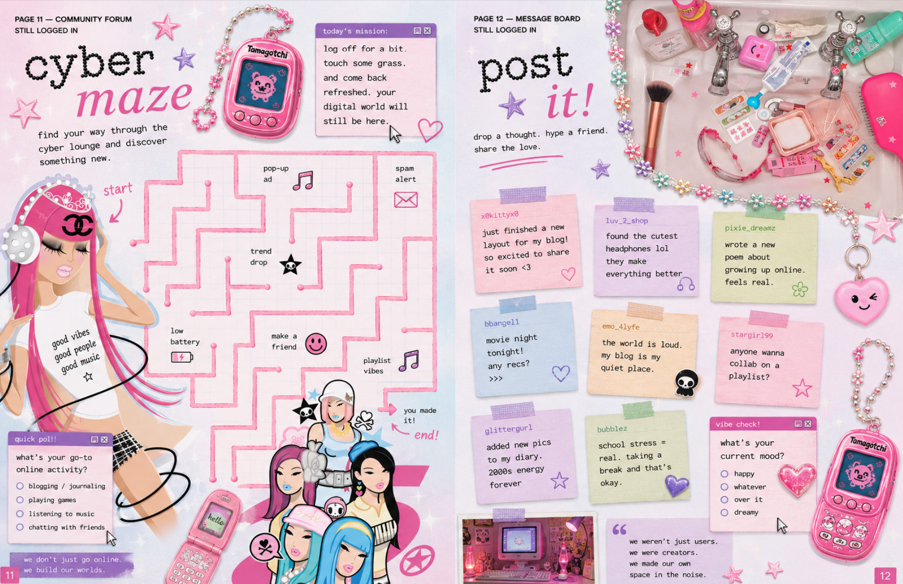
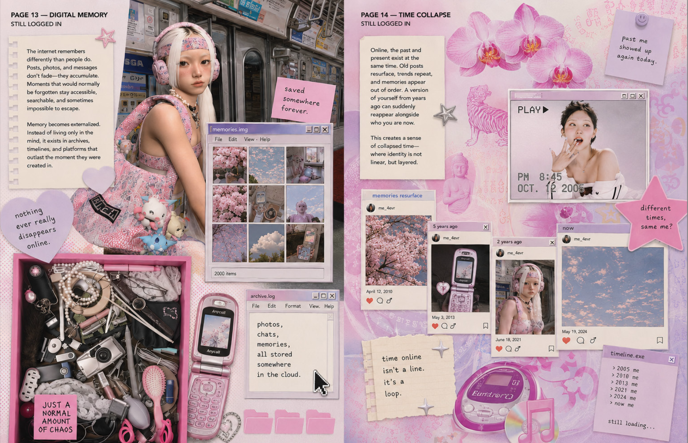
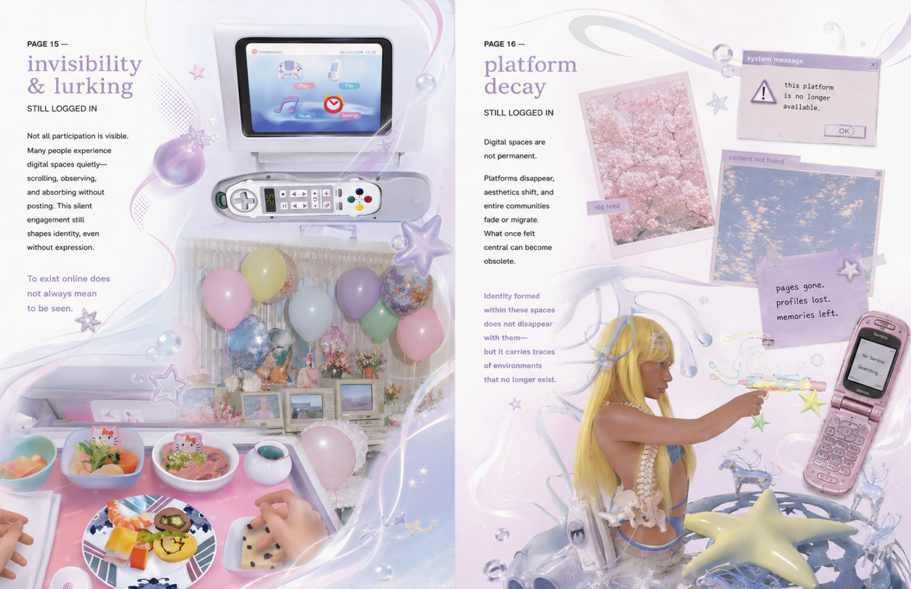
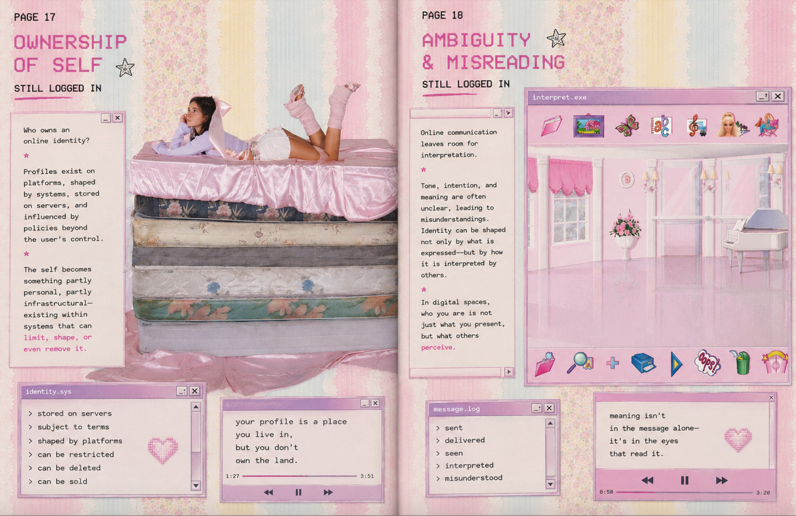
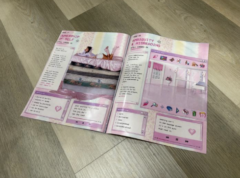
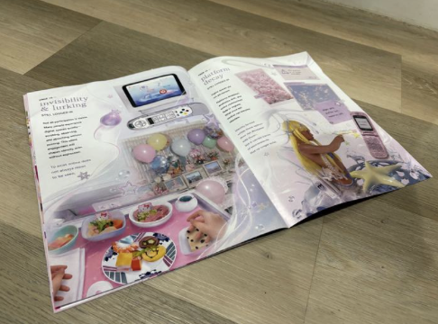
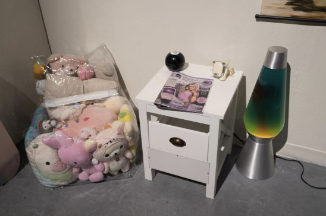
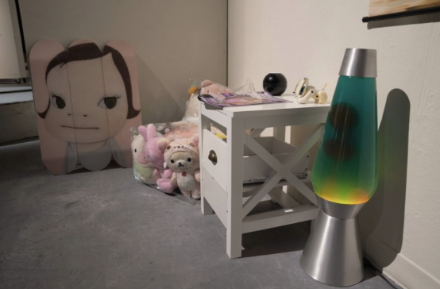
PROJECT
Developed over 15 weeks during my final semester, Digital Daydream combines research, editorial design, and installation to explore the relationship between digital spaces, escapism, and identity.